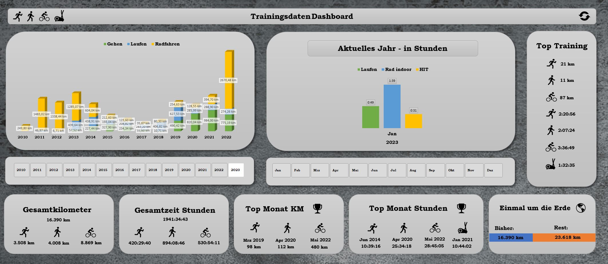
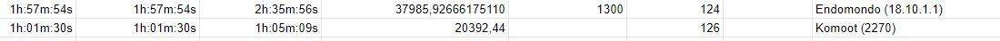
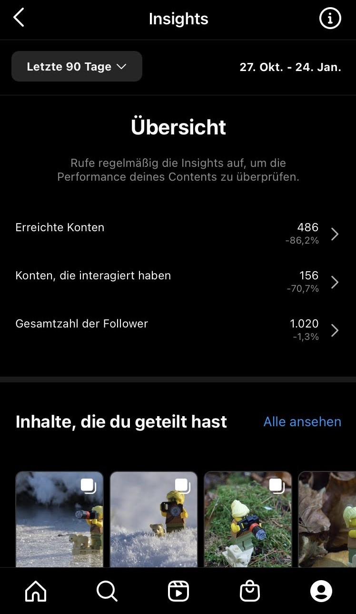
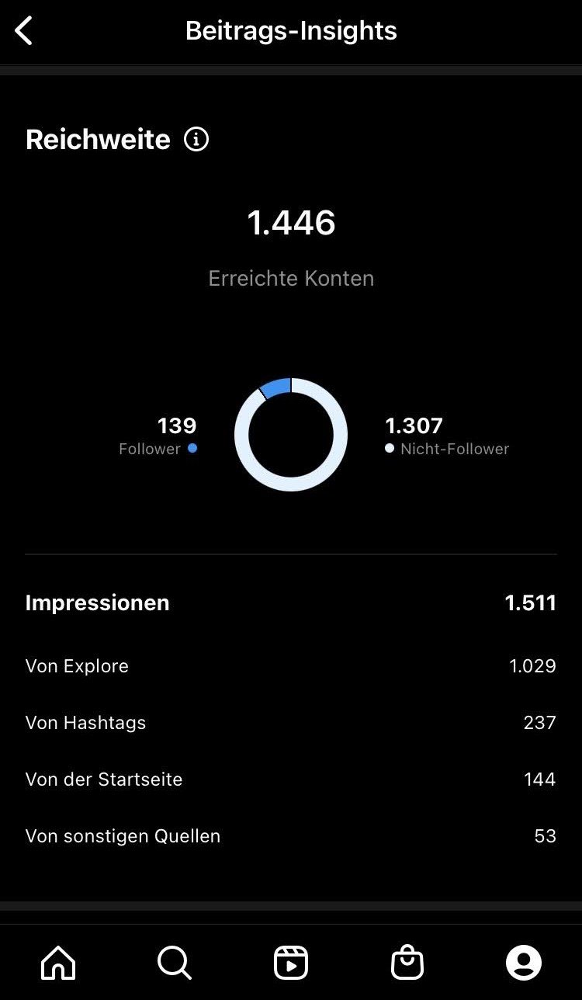
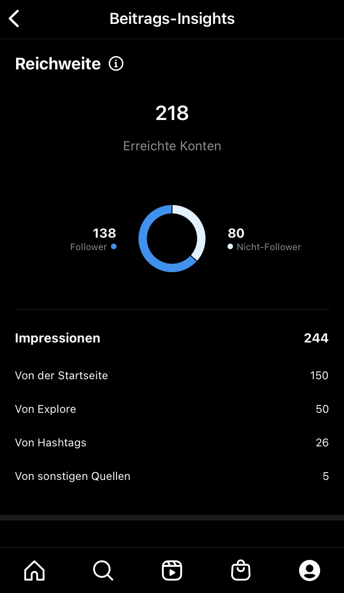
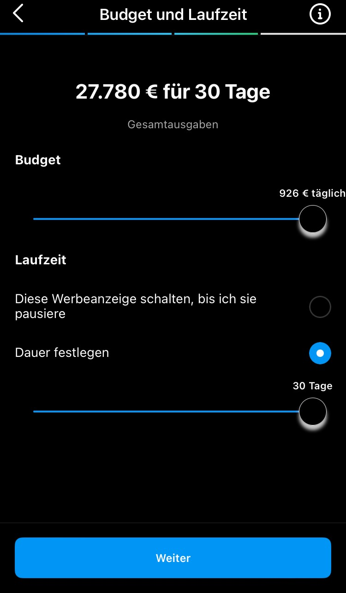

About me
Herzlich willkommen, mein Name ist Andy Jocham, geboren bin ich 1976 in Illertissen und aufgewachsen im schönen Schwabenland.
Dank meines computerbegeisterten Papas hatte ich schon relativ früh Berührung mit Computern und daduch auch bald einen eigenen Sinclair ZX 81 in meinem Kinderzimmer stehen.
Darauf wurden dann seitenweise Basic Listings aus Computerzeitschriften abgetippt um die ersten kleinen Programme zu erstellen.
Unter anderem an ein „Rennspiel“ namens Stick Shift erinnere ich mich noch ganz gut, auch dank des merkwürdigen Block Zeichensatzes auf der Tastatur.
Danach ging es über Commodore und Atari schnell in Richtung 286 mit Turbo Taste und Windows als OS.
Der erste, mit selbstverdientem Geld, gekaufte Rechner war ein Pentium 200 MMX mit Voodoo 3D Beschleuniger Karte, Soundblaster und SCSI CD Brenner.
Damit kamen dann auch die ersten eigenen Webseiten. Mit selbst beigebrachtem HTML und Javascript waren schnell so „hübsche“ Machwerke wie das hier möglich Andys kleine Welt.
Beruflich kam es leider nie zum Einstieg in die IT Welt, das wird aber gerade mit einer Umschulung zum Fachinformatiker für Anwendungsentwicklung geändert. Seit Oktober 2022 läuft die Umschulung, ich bin sehr gespannt und freue mich auf die neuen Herausforderungen.
Excel Dashboard

Training Dashboard in Excel
Die seit 2010 gesammelten Sport und Bewegungsdaten vereinheitlichen und übersichtlich darstellen.
Da ich seit 2010 meine Aktivitäten (Joggen, Radfahren, Spazieren usw.) digital erfasse, haben sich doch so einige Daten aus unterschiedlichen Quellen angesammelt. Die Apps und Methoden der Erfassung haben in der Zeit natürlich öfters gewechselt, (u.a. Endomondo, Strava, Komoot, verschiedene Fitnessbänder und zuletzt die Apple Watch), sodas die Daten zuerst gesammelt, bereinigt und vereinheitlicht werden müssen.
Die benutzen Dienste/Webseiten sind praktischerweise immer noch in Betrieb und können alle Ihre Daten exportieren, meistens über eine CSV Datei. Die Daten der letzen 2-3 Jahre kommen von der Apple Watch und werden in Apple Health gesammelt. Mit Hilfe der App HealthFit kann ich diese automatisch, unter anderem zu Google Docs syncen.
Nachdem die ganzen Datensätze dann in verschiedenen Google Sheet gesammelt sind, nutze ich Excel Power Query um alles einzulesen und zu bereinigen.
Wie auch immer Endomondo auf die Idee kam das wären gute Werte für Distanzen:

Aber wahrscheinlich sind das einfach die Rohdaten die der Sensor aus gibt.
Nach einer Menge Filtern und Rechnen kommen aber verwert- und vergleichbare Ergebnisse dabei raus. Damit habe ich ein interaktives Dashboard erstellt, das mir jetzt einen schönen Überblick über meine Aktivitäten gibt. Dank Google Sheets und Excel Power Query sogar immer auf dem neuesten Stand.
Kurze Insights in Instagram
Ich wollte mal ein wenig besser verstehen, wie es bei Instagram mit Contenterstellung - Verteilung, Werbung und dem allgemeinen Vernetzen so funktioniert.
Ein kleines Projekt für meine Fotografie kam auch gerade recht, also habe ich Anfang April 2022 ein Profil für eine kleine Lego Figur erstellt.
Ich darf vorstellen : Jane Explorer mit ihrem Begleiter Kimba.

Die ersten Ideen und Bilder entstanden im eigenen Garten, auch um das beste Objektiv und die ganzen Einstellungen auszuprobieren. Ich entschied mich, den ganzen Inhalt in Englisch zu halten, um die Reichweite zu erhöhen und mehr Menschen ansprechen zu können.
Durch das Prinzip des “Folgst du mir, Folge ich Dir” kamen auch schnell die ersten 100 Follower zustande und ich bewegte mich durch die Vorschläge automatisch in Richtung Lego und Lego Minifigs Blase.
Durch die Umstellung auf ein Business Konto bekommt man Zugriff auf ein paar neue Funktionen um die Reichweite und die Reaktionen zu messen und besser zu verstehen.

Daran sieht man schön, wie der Instagram-Algorithmus die Beiträge verteilt und wie die Leute darauf reagieren. Man merkt auch, dass die Beiträge viel weniger angeboten werden, wenn man mal Pause einlegt und nicht regelmäßig neue Beiträge veröffentlicht.


Der erste Beitrag war in einer Phase, in der ich wöchentlich ein neues Foto hochgeladen habe. Danach war ein paar Wochen Pause und man sieht an dem 2. Screenshot, dass Instagram den nächsten Beitrag viel weniger Leuten vorgeschlagen hat.
Am ersten Beispiel waren gut 2 Drittel der Zugriffe von der Explore Funktion, das bedeutet, man lässt sich einfach durch Instagram berieseln und bekommt Sachen vorgeschlagen, die einen eventuell interessieren. In diesem Modus kommt der Algorithmus wohl am meisten zu tragen.
Durch die Insights kann man gut sehen, dass Hashtags doch noch viel zur Reichweite beitragen. Hätte ich weniger eingeschätzt.
Man kann in Instagram auch direkt Werbung für seine Beiträge buchen.
Als Ziel kann man mehr Profilaufrufe, mehr Webseitenbesuche oder mehr Nachrichten angeben. Danach sucht man seine Zielgruppe aus. Zum Beispiel nach Standort, Interessen und Alter und Geschlecht. Das kann man aber auch Meta überlassen und auf automatisch stellen. Danach darf man noch Laufzeit und Budget auswählen. Das reicht in meinem Fall von 1 € - 926€ pro Tag. Als Laufzeit stehen 1 bis 30 Tage zur Verfügung.

Also im maximalen Fall könnte ich hier jetzt 27.780€ für 30 Tage ausgeben.
Ausprobiert habe ich diese Option aber nicht, Meta verdient auch ohne meine Hilfe schon genug.
Stand Januar 2023 sind es jetzt 41 Beiträge und über 1000 Follower. Es ergaben sich nette kleine Konversationen durch Kommentare und Likes. Von ein paar merkwürdigen Anfragen abgesehen, war bis jetzt erfreulich wenig von schlechten Erfahrungen oder irgendwelchen Betrugsversuchen zu spüren.
Aber ich kann mir jetzt sehr gut vorstellen, wie viel Arbeit es ist, einen größeren Social Media Kanal zu befüllen und zu betreuen. Schon allein, sich jedes Mal eine neue Idee für einen Beitrag einfallen zu lassen, kann irgendwann ermüdend werden. Da hilft ein gut aufgestellter Inhaltsplan bestimmt weiter. Auch zeigte sich, dass Regelmäßigkeit belohnt wird, lange Pausen und kein Inhalt sind nicht gut für den Algorithmus.
Kommt natürlich immer auf Zweck und Ziel des Kanals an, aber die wachsende Reichweite erreicht man wohl nur durch viel und guten Content.
Kontakt
Impressum Angaben gemäß § 5 TMG
Andreas Jocham
Schwalbenstrasse 4
89269 Vöhringen
Kontakt: E-Mail: webmaster@jocham.xyz
Haftungsausschluss:
Haftung für Inhalte:
Die Inhalte unserer Seiten wurden mit größter Sorgfalt erstellt. Für die Richtigkeit, Vollständigkeit und Aktualität der Inhalte können wir jedoch keine Gewähr übernehmen. Als Diensteanbieter sind wir gemäß § 7 Abs.1 TMG für eigene Inhalte auf diesen Seiten nach den allgemeinen Gesetzen verantwortlich. Nach §§ 8 bis 10 TMG sind wir als Diensteanbieter jedoch nicht verpflichtet, übermittelte oder gespeicherte fremde Informationen zu überwachen oder nach Umständen zu forschen, die auf eine rechtswidrige Tätigkeit hinweisen. Verpflichtungen zur Entfernung oder Sperrung der Nutzung von Informationen nach den allgemeinen Gesetzen bleiben hiervon unberührt. Eine diesbezügliche Haftung ist jedoch erst ab dem Zeitpunkt der Kenntnis einer konkreten Rechtsverletzung möglich. Bei Bekanntwerden von entsprechenden Rechtsverletzungen werden wir diese Inhalte umgehend entfernen.
Haftung für Links:
Unser Angebot enthält Links zu externen Webseiten Dritter, auf deren Inhalte wir keinen Einfluss haben. Deshalb können wir für diese fremden Inhalte auch keine Gewähr übernehmen. Für die Inhalte der verlinkten Seiten ist stets der jeweilige Anbieter oder Betreiber der Seiten verantwortlich. Die verlinkten Seiten wurden zum Zeitpunkt der Verlinkung auf mögliche Rechtsverstöße überprüft. Rechtswidrige Inhalte waren zum Zeitpunkt der Verlinkung nicht erkennbar. Eine permanente inhaltliche Kontrolle der verlinkten Seiten ist jedoch ohne konkrete Anhaltspunkte einer Rechtsverletzung nicht zumutbar. Bei Bekanntwerden von Rechtsverletzungen werden wir derartige Links umgehend entfernen.